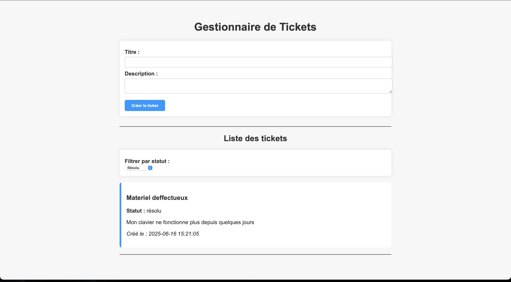
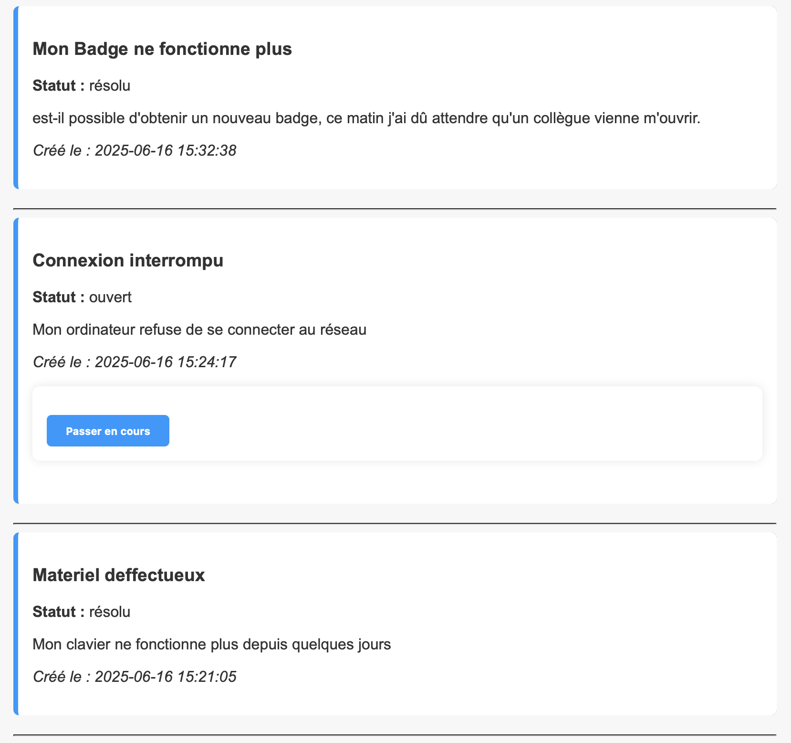

Voici quelques réalisations que j'ai développées pour apprendre, m'améliorer ou répondre à des besoins réels.
Ce projet permet de gérer un inventaire de matériel informatique : ajouter, modifier, supprimer des équipements, suivre les stocks et visualiser les mouvements.
Fonctionnalités :
- Interface CRUD (Create, Read, Update, Delete)
- Connexion à une base de données MySQL
- Gestion des catégories / types de matériel
- Recherches et filtres dynamiques (optionnel)
Objectif : Appliquer mes compétences en PHP/MySQL et structurer un projet utile, comme dans un vrai environnement IT.
Développé en PHP, ce projet simule une plateforme de support technique. Il permet de soumettre, consulter et filtrer des tickets.


Fonctionnalités :
- Ajout de tickets par formulaire
- Affichage dynamique avec filtres par statut (ouvert, en cours, résolu)
- Utilisation de boucles et conditions PHP
Objectif : Reproduire une partie du système utilisé en entreprise, pour comprendre comment un outil de support fonctionne.